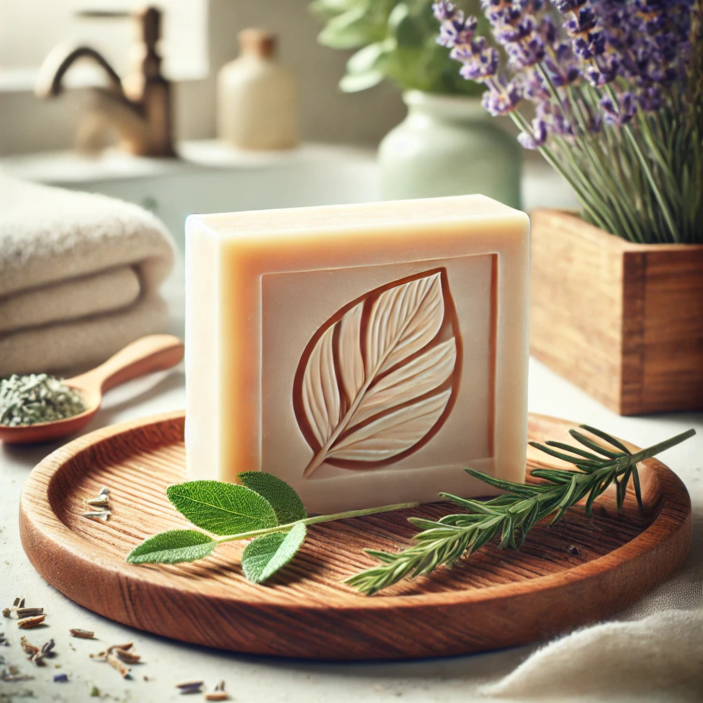

Notre savon solide naturel
Découvrez notre savon solide naturel, conçu pour prendre soin de votre peau tout en respectant l’environnement. Fabriqué à la main à partir d'ingrédients 100% naturels, notre savon ne contient aucun produit chimique agressif ni additif artificiel.
- Ingrédients : huile d'olive bio, huile de coco, beurre de karité, huiles essentielles.
- Avantages : hydratation intense, parfum subtil et durable, respectueux des peaux sensibles.
- Durabilité : zéro plastique, biodégradable.
Chez Les Mains Propres, chaque geste compte pour préserver notre planète tout en prenant soin de vous.